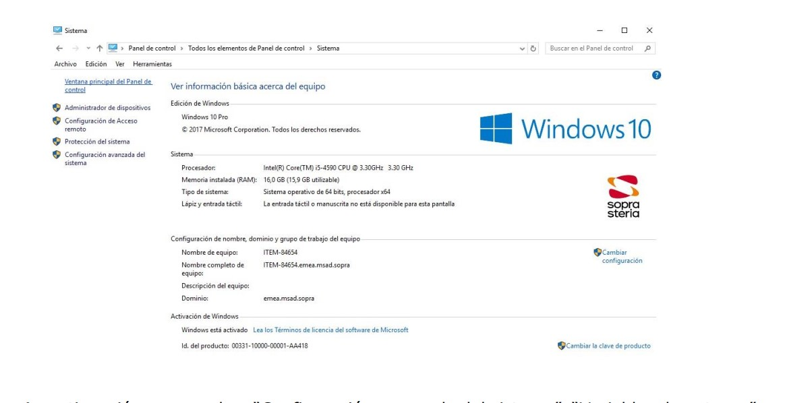
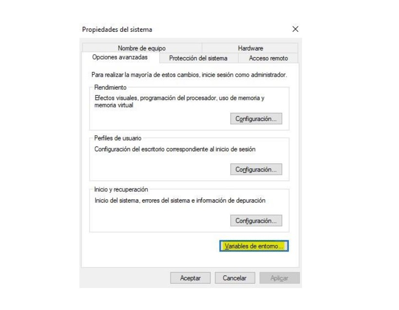
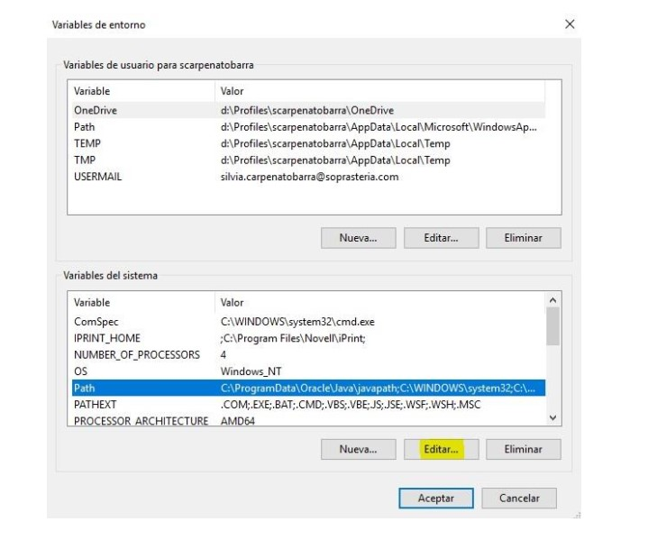
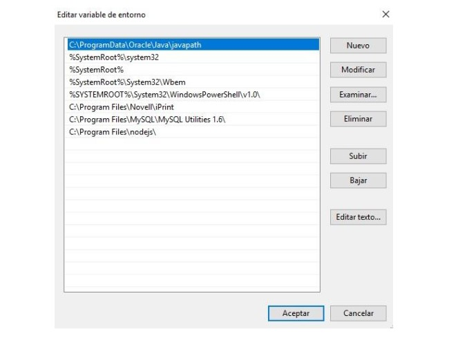

Entorno de desarrollo
2. Entorno de desarrollo
2.1. Instalación del JDK (Java Development Kit)
En primer lugar se deberá comprobar si el JDK ya está instalado en el equipo. Para ello, se deberá escribir lo siguiente en la línea de comandos:
java -version
En caso de no tener instalado el JDK, se deberán seguir los siguientes pasos:
- Se deberá descargar el JDK desde la siguiente URL: Link-Oracle
-
Se añadirá el ejecutable de Java que se acaba de descargar al PATH del sistema, para ello:
- Se accede a la siguiente ubicación del pc “Panel de control\Todos los elementos de Panel de control\Sistema”. 
-
A continuación, se accede a “Configuración avanzada del sistema”, “Variables de entorno”. 
-
Es posible que se haya añadido el JDK de manera automática al equipo, por lo que se deberá comprobar haciendo clic sobre "Path" (que está seleccionado en la imagen), y después sobre "Editar..." 
- En la imagen se puede ver que Java está instalado en el sistema, concretamente en "C:\ProgramData\Oracle\Java\javapath". De no ser así, habrá que añadirlo haciendo clic en "Nuevo". 
2.2. Instalación del entorno de desarrollo Eclipse
- Se accede a la siguiente URL y se descarga la versión de Eclipse con la que se vaya a trabajar: Link-Eclipse
- Se descomprime el .zip en el disco D:.
- Para ejecutar Eclipse hay que hacer doble click en el archivo eclipse.exe que se encuentra dentro de la carpeta. Se puede crear un acceso directo al .exe de la aplicación y guardarlo en el escritorio para mayor comodidad.